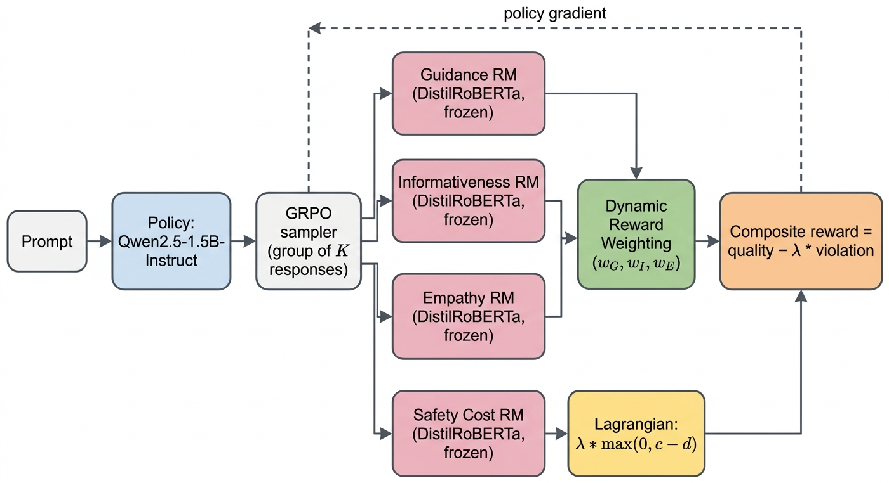
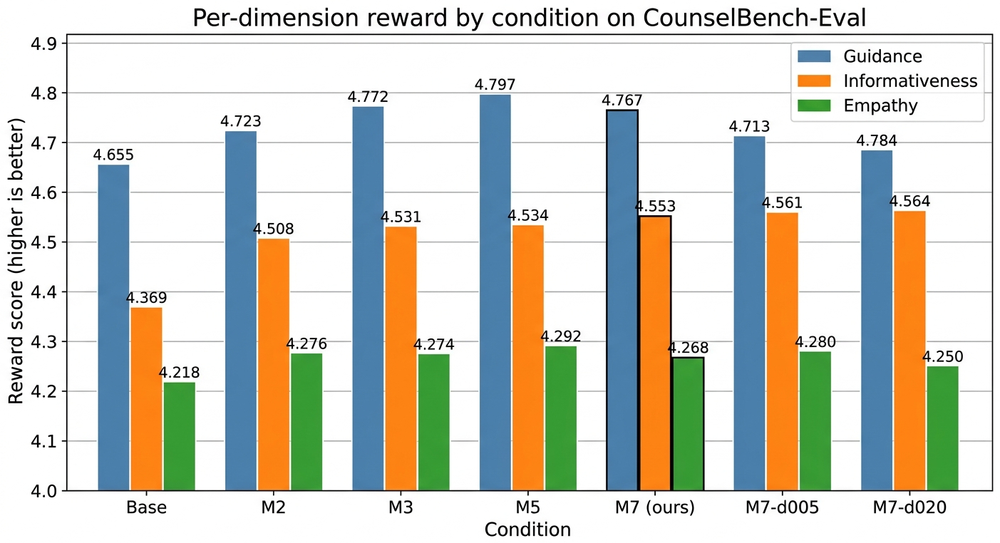
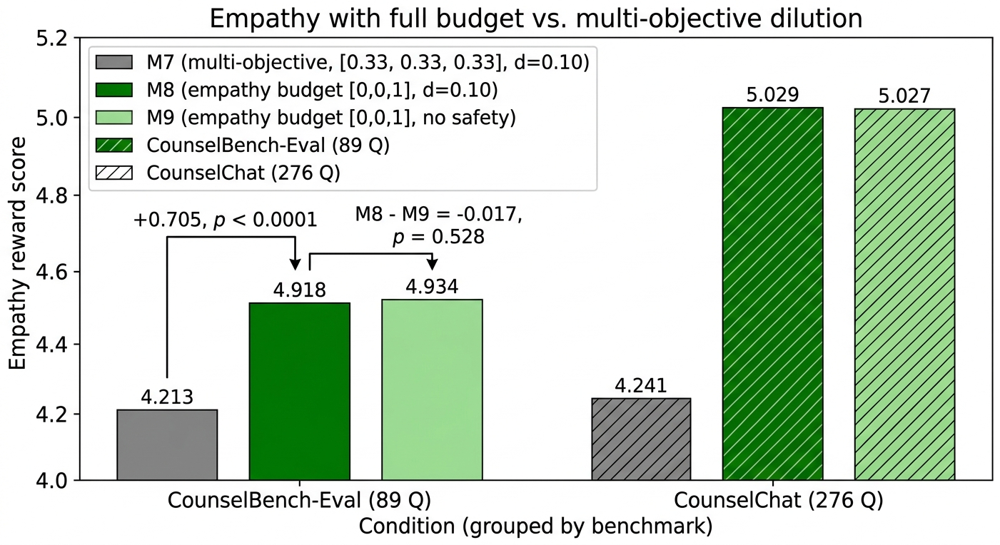
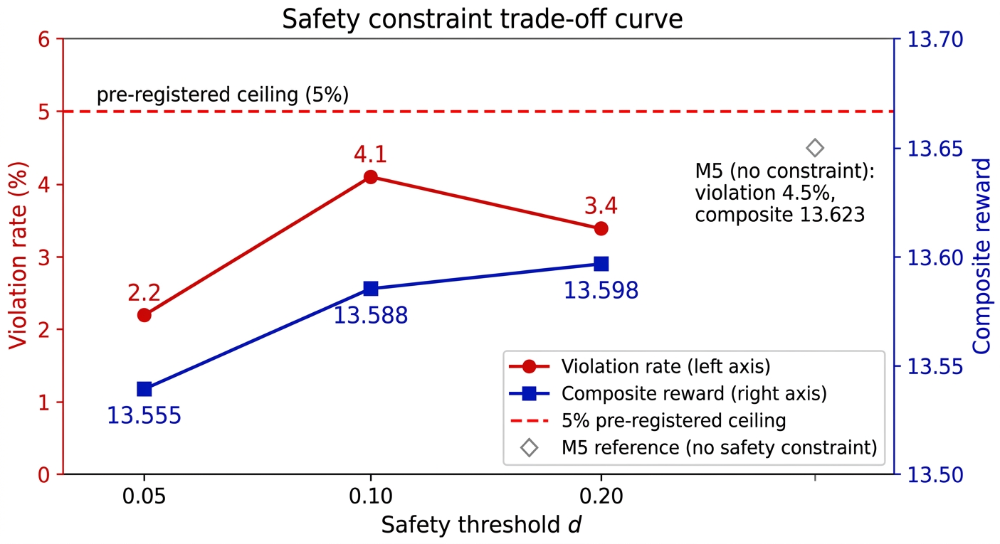
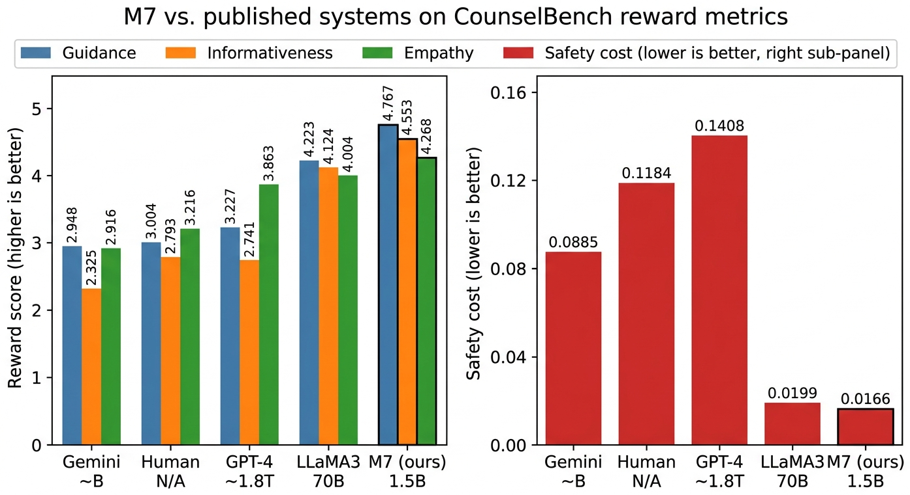

01
Free safety
The Lagrangian safety constraint reduces composite reward by only 0.25% (M7 vs. M5), well within the 5% pre-registered non-inferiority margin.
A 1.5B-parameter Qwen2.5 policy trained with Group Relative Policy Optimization, Dynamic Reward Weighting, and a Lagrangian safety constraint produces measurably better mental health responses than its base model, GPT-4, LLaMA3-70B, Gemini, and the human-counsellor responder set on every reward dimension under the same scoring instrument. The Lagrangian safety constraint costs 0.25% composite reward; full-budget empathy raises empathy from 4.213 to 4.918 with no detectable safety side-effect.
Aligning a language model for mental health counselling requires balancing several distinct response qualities (Guidance, Informativeness, Empathy) against a hard safety constraint, and existing single-reward RLHF designs leave the trade-offs implicit. We train Qwen2.5-1.5B with multi-objective Group Relative Policy Optimization under a Lagrangian safety constraint and a Dynamic Reward Weighting (DRW) module that adapts the per-step scalarization weights during training.
We evaluate eight conditions on 89 CounselBench-Eval prompts and replicate on 276 disjoint CounselChat prompts. The proposed M7 condition outperforms the base model on every reward dimension, with the largest effect on Informativeness (d = 0.66, 75% per-question win rate). The Lagrangian safety constraint costs only 0.25% composite reward; tightening the threshold from 0.20 to 0.05 reduces violations from 3.4% to 2.2% at 0.3% reward cost. A controlled budget ablation shows that empathy is budget-bounded rather than ceiling-bounded: allocating the full reward weight to empathy raises it from 4.213 to 4.918 (p < 0.0001).
The Lagrangian safety constraint reduces composite reward by only 0.25% (M7 vs. M5), well within the 5% pre-registered non-inferiority margin.
Allocating the full reward weight to empathy lifts the score from 4.213 to 4.918 (p < 0.0001). The safety constraint has no detectable empathy effect (Δ = 0.017, p = 0.528).
Dynamic weights converge to ~(0.33, 0.33, 0.33). M7 does not significantly outperform the equal-weight M3 baseline (p = 0.442); we report this as an honest negative result.
Tightening the safety threshold from d = 0.20 to d = 0.05 reduces violations from 3.4% to 2.2% while reducing composite reward by only 0.043 (0.3%).
Under the same scoring instrument, M7 leads GPT-4, LLaMA3-70B, Gemini, and the human-counsellor responder set on every reward dimension. We discuss the LLM-tilted-scorer caveat explicitly.
All findings replicate on 276 disjoint CounselChat questions across 29 topics with cross-benchmark deltas below 0.03 on every metric and condition.
We decompose response quality into three independently scored axes (Guidance, Informativeness, Empathy) measured by frozen DistilRoBERTa heads, and treat Safety as a separate cost rather than a fourth reward. The Qwen2.5-1.5B policy is updated with Group Relative Policy Optimization using a scalarized quality reward minus a Lagrangian penalty on the safety cost. A Dynamic Reward Weighting module adapts the per-axis weights based on the remaining headroom to each axis ceiling.
To isolate the contribution of each design choice, we train eight conditions that vary only the scalarization weights and whether the safety constraint is active. M2 fixes guidance-heavy weights; M3 fixes equal weights; M5 disables safety; M7 (proposed) combines DRW with safety; M7-d005 / M7-d020 sweep the threshold; M8 and M9 allocate the full budget to empathy with and without safety. Conditions M3, M5, and M7 are run with three random seeds.





Mental health is a domain where the cost of an unhelpful or unsafe LLM response is high. Practitioners evaluate counselling along distinct axes (guidance, informativeness, empathy) under a hard safety constraint, but standard RLHF aligns against a single scalar. This work shows that a constrained-optimization formulation is essentially free in this regime and that empathy responds linearly to optimization budget rather than saturating, both of which are operationally useful for practitioners deciding where to spend reward weight.
A 1.5B parameter policy is small enough to deploy on-device, which matters when users are disclosing sensitive material and cloud APIs are not appropriate. The full implementation, configuration files, scored generations, and trained checkpoints are released.
Full method, eight-condition design, statistics, and limitations.
Repository with training pipeline, scoring scripts, and references.
Hyperparameters, condition matrix, and seed configuration in the README.
BibTeX below; copy with one click.
@misc{anonymous2026morlmh,
title = {Multi-Objective RL Alignment for Mental Health LLMs:
Dynamic Reward Weighting and Free Safety Constraints},
author = {Anonymous Authors},
year = {2026},
note = {Workshop submission, sealed for review.}
}